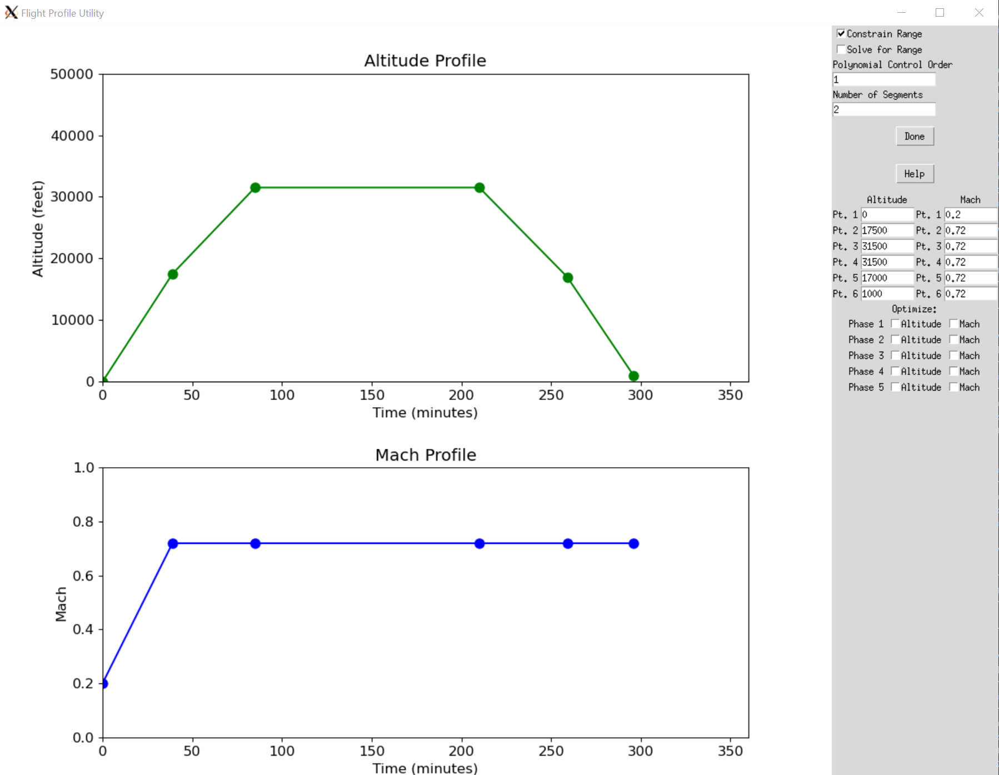

Drawing and running simple missions#
Overview#
Aviary comes with a simple built-in graphical interface for defining missions. This tool can be accessed via the command line and provides an interactive way to define flight phases, including altitude, Mach number, and optimization parameters.
It is specifically made to only be used with the "simple" mission method.
You could use the results from the GUI to run a mission with a different method, but it would require manually changing the generated phase_info dict.

Getting Started#
To launch the Flight Profile Utility, use the following command in your terminal:
aviary draw_mission
This command will open a graphical interface where you can interactively design a flight profile.
Graphical Interface Usage#
Main Components#
Altitude Plot: Graphically represents the altitude profile over time. Users can add and drag points to adjust the altitude at different mission times.
Mach Plot: Similar to the Altitude Plot but for the Mach number profile.
Control Panel: Contains various options and controls for customizing the flight profile and running simulations.
Interactive Features#
Adding Points: Click on either the Altitude or Mach plot area to add a new point. Points on the Altitude plot represent altitude (in feet) at a specific time (in minutes), whereas points on the Mach plot represent the Mach number at specific times.
Dragging Points: Points on both plots can be dragged vertically to adjust values. This allows for fine-tuning of the flight profile.
Removing Points: Currently, the utility does not support direct removal of points. Adjust the profile by dragging or adding new points.
Input Fields and Options#
Optimize Mach: Toggles optimization for Mach number during each phase of the flight.
Optimize Altitude: Toggles optimization for altitude during each phase.
Constrain Range: If checked, imposes constraints on the flight range.
Solve for Range: Calculates the total flight range based on the profile.
Polynomial Control Order: Sets the polynomial order for control optimization. This is for all phases. You can modify behavior on a per-phase basis by editing the outputted
phase_infodict.Number of Segments: Defines the number of segments for the mission profile. This is for all phases. You can modify behavior on a per-phase basis by editing the outputted
phase_infodict.Inputting Altitude and Mach values: In these text fields you can directly input values for altitude and Mach number. These will directly update the plots.
Phase-specific Optimization: Each phase (line in the plots) has two checkboxes for ‘Optimize Mach’ and ‘Optimize Altitude’, allowing for phase-specific optimization settings.
Output#
Upon completion, the tool outputs a Python script named outputted_phase_info.py in the current working directory.
This tool overwrites any existing file called outputted_phase_info.py in the current working directory.
This outputted file contains the phase_info dictionary, which holds the flight profile data structured for use in mission simulations.
Running a Mission Simulation#
After generating the flight profile, use the run_mission command to simulate the mission.
This command utilizes the phase_info from outputted_phase_info.py and simulates the mission based on the defined parameters.
You can use the --phase_info flag to specify the path to the outputted_phase_info.py file.
Here we use a benchmark case as the inputted .csv file, though you can use any Aviary .csv here that defines an aircraft.
aviary run_mission --phase_info outputted_phase_info.py validation_cases/benchmark_tests/test_aircraft/aircraft_for_bench_FwFm.csv
You can also supply an optimizer, otherwise the default (SLSQP) will be used. Here is how you’d run the mission with the IPOPT optimizer:
aviary run_mission --optimizer IPOPT --phase_info outputted_phase_info.py validation_cases/benchmark_tests/test_aircraft/aircraft_for_bench_FwFm.csv